Earlier we discussed, and calculated, the electric field of a dipole: two equal and opposite charges that are “close” to each other. (In this context, “close” means that the distance d between the two charges is much, much less than the distance of the field point P, the location where you are calculating the field.) Let’s now consider what happens to a dipole when it is placed in an external field . We assume that the dipole is a permanent dipole; it exists without the field, and does not break apart in the external field.
Rotation of a Dipole due to an Electric Field
For now, we deal with only the simplest case: The external field is uniform in space. Suppose we have the situation depicted in [link], where we denote the distance between the charges as the vector pointing from the negative charge to the positive charge. The forces on the two charges are equal and opposite, so there is no net force on the dipole. However, there is a torque:
A dipole in an external electric field. (a) The net force on the dipole is zero, but the net torque is not. As a result, the dipole rotates, becoming aligned with the external field. (b) The dipole moment is a convenient way to characterize this effect. The points in the same direction as .
The quantity (the magnitude of each charge multiplied by the vector distance between them) is a property of the dipole; its value, as you can see, determines the torque that the dipole experiences in the external field. It is useful, therefore, to define this product as the so-called dipole moment of the dipole:
We can therefore write
Recall that a torque changes the angular velocity of an object, the dipole, in this case. In this situation, the effect is to rotate the dipole (that is, align the direction of so that it is parallel to the direction of the external field.
Induced Dipoles
Neutral atoms are, by definition, electrically neutral; they have equal amounts of positive and negative charge. Furthermore, since they are spherically symmetrical, they do not have a “built-in” dipole moment the way most asymmetrical molecules do. They obtain one, however, when placed in an external electric field, because the external field causes oppositely directed forces on the positive nucleus of the atom versus the negative electrons that surround the nucleus. The result is a new charge distribution of the atom, and therefore, an induced dipole moment ([link]).
A dipole is induced in a neutral atom by an external electric field. The induced dipole moment is aligned with the external field.
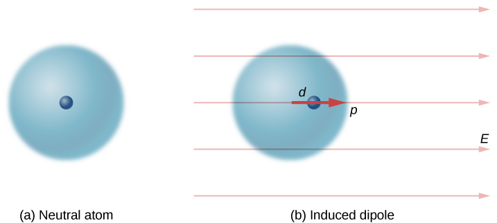
An important fact here is that, just as for a rotated polar molecule, the result is that the dipole moment ends up aligned parallel to the external electric field. Generally, the magnitude of an induced dipole is much smaller than that of an inherent dipole. For both kinds of dipoles, notice that once the alignment of the dipole (rotated or induced) is complete, the net effect is to decrease the total electric field in the regions inside the dipole charges ([link]). By “inside” we mean in between the charges. This effect is crucial for capacitors, as you will see in Capacitance.
The net electric field is the vector sum of the field of the dipole plus the external field.
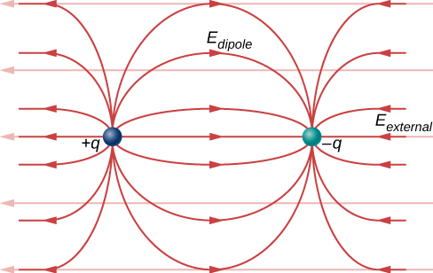
Recall that we found the electric field of a dipole in [link]. If we rewrite it in terms of the dipole moment we get:
The form of this field is shown in [link]. Notice that along the plane perpendicular to the axis of the dipole and midway between the charges, the direction of the electric field is opposite that of the dipole and gets weaker the further from the axis one goes. Similarly, on the axis of the dipole (but outside it), the field points in the same direction as the dipole, again getting weaker the further one gets from the charges.
Summary
If a permanent dipole is placed in an external electric field, it results in a torque that aligns it with the external field.
If a nonpolar atom (or molecule) is placed in an external field, it gains an induced dipole that is aligned with the external field.
The net field is the vector sum of the external field plus the field of the dipole (physical or induced).
The strength of the polarization is described by the dipole moment of the dipole, .
Key Equations
Coulomb’s law
Superposition of electric forces
Electric force due to an electric field
Electric field at point P
Field of an infinite wire
Field of an infinite plane
Dipole moment
Torque on dipole in external E-field
Conceptual Questions
What are the stable orientation(s) for a dipole in an external electric field? What happens if the dipole is slightly perturbed from these orientations?
Problems
Consider the equal and opposite charges shown below. (a) Show that at all points on the x-axis for which (b) Show that at all points on the y-axis for which
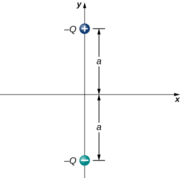
,
(a) What is the dipole moment of the configuration shown above? If , (b) what is the torque on this dipole with an electric field of ? (c) What is the torque on this dipole with an electric field of ? (d) What is the torque on this dipole with an electric field of ?
A water molecule consists of two hydrogen atoms bonded with one oxygen atom. The bond angle between the two hydrogen atoms is (see below). Calculate the net dipole moment of a hypothetical water molecule where the charge at the oxygen molecule is −2e and at each hydrogen atom is +e. The net dipole moment of the molecule is the vector sum of the individual dipole moment between the two O-Hs. The separation O-H is 0.9578 angstroms.
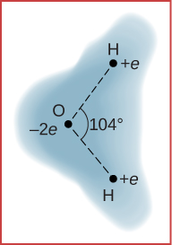
The net dipole moment of the molecule is the vector sum of the individual dipole moments between the two O-H. The separation O-H is 0.9578 angstroms:
Additional Problems
Point charges and are located at and . What is the force of
What is the force on the charge shown below?
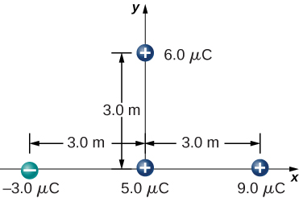
,
What is the force on the charge placed at the center of the square shown below?
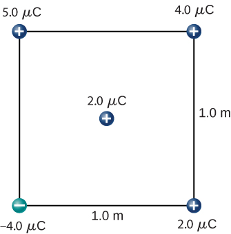
Four charged particles are positioned at the corners of a parallelogram as shown below. If and what is the net force on q?
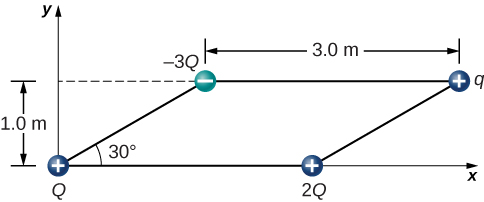
Charges Q and q form a right triangle of sides 1 m and Charges 2Q and q form a right triangle of sides 1 m and
,
A charge Q is fixed at the origin and a second charge q moves along the x-axis, as shown below. How much work is done on q by the electric force when q moves from
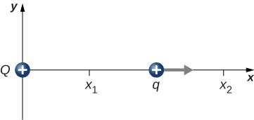
A charge is released from rest when it is 2.0 m from a fixed charge What is the kinetic energy of q when it is 1.0 m from Q?
What is the electric field at the midpoint M of the hypotenuse of the triangle shown below?
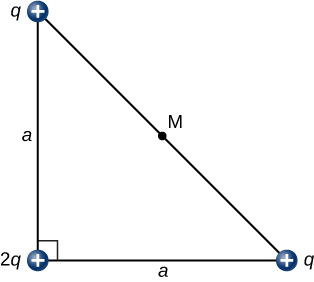
Find the electric field at P for the charge configurations shown below.
a. ; b. ; c.
(a) What is the electric field at the lower-right-hand corner of the square shown below? (b) What is the force on a charge q placed at that point?
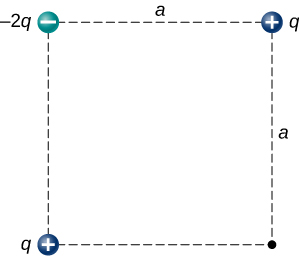
Point charges are placed at the four corners of a rectangle as shown below: and What is the electric field at P?
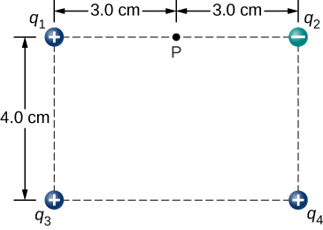
Three charges are positioned at the corners of a parallelogram as shown below. (a) If what is the electric field at the unoccupied corner? (b) What is the force on a charge placed at this corner?
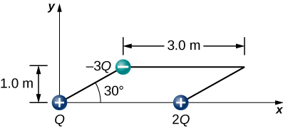
A positive charge q is released from rest at the origin of a rectangular coordinate system and moves under the influence of the electric field What is the kinetic energy of q when it passes through
,
A particle of charge and mass m is placed at the center of a uniformaly charged ring of total charge Q and radius R. The particle is displaced a small distance along the axis perpendicular to the plane of the ring and released. Assuming that the particle is constrained to move along the axis, show that the particle oscillates in simple harmonic motion with a frequency
Charge is distributed uniformly along the entire y-axis with a density and along the positive x-axis from with a density What is the force between the two distributions?
Electric field of wire at x: ,
The circular arc shown below carries a charge per unit length where is measured from the x-axis. What is the electric field at the origin?
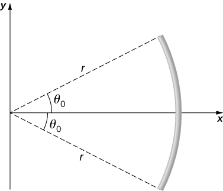
Calculate the electric field due to a uniformly charged rod of length L, aligned with the x-axis with one end at the origin; at a point P on the z-axis.
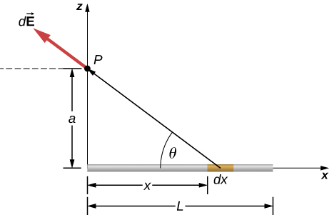
,
,
,
,
Substituting z for a, we have:
The charge per unit length on the thin rod shown below is What is the electric force on the point charge q? Solve this problem by first considering the electric force on q due to a small segment of the rod, which contains charge Then, find the net force by integrating over the length of the rod.
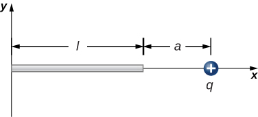
The charge per unit length on the thin rod shown here is What is the electric force on the point charge q? (See the preceding problem.)
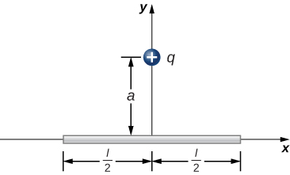
There is a net force only in the y-direction. Let be the angle the vector from dx to q makes with the x-axis. The components along the x-axis cancel due to symmetry, leaving the y-component of the force.
,
The charge per unit length on the thin semicircular wire shown below is What is the electric force on the point charge q? (See the preceding problems.)
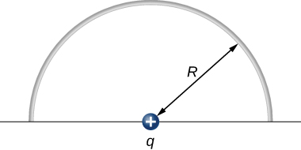
Glossary
dipole moment
property of a dipole; it characterizes the combination of distance between the opposite charges, and the magnitude of the charges
induced dipole
typically an atom, or a spherically symmetric molecule; a dipole created due to opposite forces displacing the positive and negative charges
permanent dipole
typically a molecule; a dipole created by the arrangement of the charged particles from which the dipole is created
![In figure a dipole in a uniform electric field is shown along with the forces on the charges that make up the dipole. The dipole consists of a charge, minus q, and a positive charge, plus q, separated by a distance d. The line connecting the charges is at an angle to the horizontal so that the negative charge is above and to the left of the positive charge. The electric field E is horizontal and points to the right. The force on the negative charge is to the left, and is labeled as F minus. The force on the positive charge is to the right, and is labeled as F plus. Figure b shows the same diagram with the addition of the dipole moment vector, p, which points along the line connecting the charges, from the negative to the positive charge.](CNX_UPhysics_22_07_DipoleRot.jpg)
![In figure a, positive charge q is on the left, negative charge q is a distance a to the right of it. Point P is a distance a to the right of the negative charge q. In figure b, positive charge q is on the left, and a positive charge q is a distance a to the right of it. Point P is below the midpoint, a distance a from each of the charges so that the two charges and point P are at the vertices of an equilateral triangle whose sides are length a. In figure c, four charges are at the corners of a square whose sides are length a. The two top corners each have positive charge q. The two bottom corners each have negative charge q. Point P is at the center of the square.](CNX_UPhysics_22_04_Prob18_img.jpg)